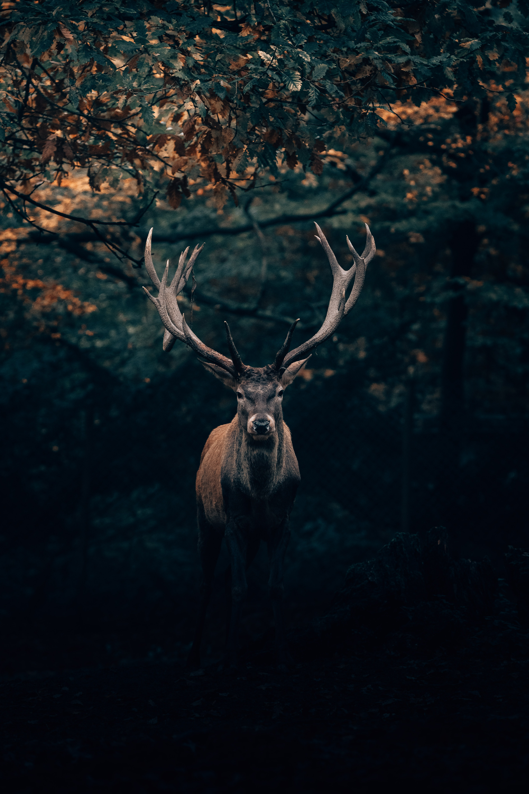

Cervo
da família cervídeosconstituem uma família de animais ungulados artiodáctilos e ruminantes, à qual pertencem animais como a corça, o alce e o caribu.
Os cervídeos estão geograficamente bem distribuídos por todos os continentes exceto Austrália e Antártida.

Os cervídeos são herbívoros com alimentação específica devido à pouca especialização do seu estômago, que não digere vegetação fibrosa como erva.
Assim, os cervídeos alimentam-se principalmente de rebentos, folhas, frutos e líquenes. Têm ainda elevados requerimentos nutricionais de minerais que lhes permitam crescer novas galhadas todos os anos.
“um exército de cervos comandado por um leão é muito mais temível que um exército de leões comandado por um cervo”
- Surgiu: 12.000 anos
- Tipo: Mamífero
- Idade Média: 20 anos
- Macho adulto: 130kg
- Fêmea adulta: 100kg
- Família: Cervídeos
Os cervídeos, cervos (latim científico: Cervidae) ou ainda veados (do latim venatu, "caça morta", constituem uma família de animais ungulados artiodáctilos e ruminantes, à qual pertencem animais como a corça, o alce e o caribu.
Os cervídeos, cervos (latim científico: Cervidae) ou ainda veados (do latim venatu, "caça morta" ,constituem uma família de animais ungulados artiodáctilos e ruminantes, à qual pertencem animais como a corça, o alce e o caribu.